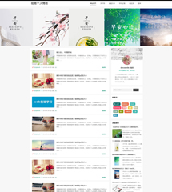
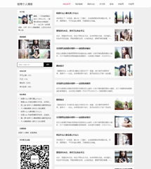
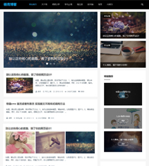

关于响应式Web设计技巧以及入门
html5和css3流行至今，我在做响应式的网站一直是在“尝试”的阶段。并没有深入的去研究和学习，浅显的理解就是根据屏幕分辨率的大小，网站布局、图片、文字大小等...

三步实现滚动条触动css动画效果
现在很多网站都有这种效果，我就整理了一下，分享出来。利用滚动条来实现动画效果，ScrollReveal.js 用于创建和管理元素进入可视区域时的动画效果，帮助你的网站增加吸引力...

6条网页设计配色原则,让你秒变配色高手
网页设计好不好看,颜色是毋庸置疑要排首位的,所以关于颜色的搭配技巧以及原则,对于每一个要学习web前端设计的新手来说,这都是一个重要的学习过程.在本教程中我们将与你分享...

十条设计原则教你学会如何设计网页布局!
网页常见的布局有很多种,单列布局,多列布局.其中单列布局是国外很多网站比较常用的.咱们很多站长以及门户网站都使用的是是两列布局,很少用三列布局的.
下面我来分享下我们...

别让这些闹心的套路，毁了你的网页设计
网页设计和做人一样，需要少一些套路，多一些真诚。那么下面就为大家揭穿那些看似好用，但用户体验并不好的设计模式。另外再附上解决办法，避免网页设计中出现这些问题。...
网页中图片属性固定宽度，如何用js改变大小
后台上传图片后，都有一个图片属性，会指定图片的宽和高，如果图片固定了宽度和高度，PC端用max-width可以控制最大宽度，高度自动缩放。但是手机端就没法自动缩放，可以使用js来改变图片的style，通过100%比例，当然也可以设置px固定的高度宽度。...
一个三十而立的男程序员真实讲述：代码搅乱我的生活
讲述者：李仲 31岁 程序员记录者：杨丁 记者 荆楚网四年如一日 生活沉闷我做了四年程序员。这是非常沉闷的一个工作，如果对这行有爱好，还觉得比较有乐趣。如果光是为糊口，...
一个SEO站长分享个人博客产品网赚建站经历全过程
风光接单，万元大钞拍在老板的面前我是一个普通的seo，更是一个再普通不过的站长，每天在网络公司优化着没完没了的企业网站，分析着杂乱无章的数据。每天15个小时面对电脑的...

个人博客从简不繁
十一月中旬开始，排名突然下降了，网站“个人博客”关键词排名从第一页第二名滑落到100页以后了，个人博客这个关键词百度已经搜不到了，仅有google、搜狗、360排...
即便是坑，我也想要拉你入伙！
之前谈《女程序员职业生涯该如何发展？》其实，女程序员的职业生涯相对于男程序员来说是很短暂的。就目前我来说，从事这行都已有五年时间，当觉得自己在一个瓶颈阶段无法突...
Come on,行动起来吧!我们和时间来一场赛跑!
"时间过得那么飞快,使我的小心眼儿里不只是着急,还有悲伤.有一天,我放学回家,看到太阳快落山了,就下决心说:"我要比太阳更快地回家."我狂奔回去,站在庭院前喘气的时候,看到太...

作为一个设计师,如果遭到质疑你是否能恪守自己的原则?
曾经有站长找我求助，他说他不知道该怎么办，自己做出来的网站，不仅没有得到大家的认可，反而让大家给他开了一个评判大会。他自己认为已经是做的最好的，却遭受大家无情的...

个人博客，属于我的小世界！
本文很长，记录了我博客建站初到现在的过程，还有我从毕业到现在的一个状态，感谢您的阅读，如果你还是学生，也许你能从此文中，找到我们曾经相似的地方。如果你已经工作，...
我是怎么评价自己的？
小时候，大概3岁吧，这时候不记事儿，但大人老说这事儿，脑子里就总是那些场景，感觉记忆犹新。什么事儿呢，就是我把奶奶家的奶粉拿回自己家喝，让我妈给我兑，结果他们说我这是“偷”，为了挨打轻一些，问我哪里来的，我瞎说了一个说那个谁家的，结果，打得更凶。...
dancesmile | 杨青
Web前端设计师、网页设计
点击排行
- 关于响应式Web设计技巧以及入门
html5和css3流行至今，我在做响应式的网站一直是在“尝试”的阶...
- 三步实现滚动条触动css动画效果
现在很多网站都有这种效果，我就整理了一下，分享出来。利用滚动条来实现...
- 个人博客模板《早安》
html5个人博客模板《早安》，采用html5+css3设计，首页全屏5图，增加标签...
- 个人博客模板《早安》
 html5个人博客模板《早安》，采用html5+css3设计，首页全屏5图，增加标签...
html5个人博客模板《早安》，采用html5+css3设计，首页全屏5图，增加标签... - 个人博客从简不繁
十一月中旬开始，排名突然下降了，网站“个人博客”关键词排名...
站长推荐
- 个人博客模板《蓝色畅想》
 个人博客模板《蓝色畅想》，html5+css3.文字比图片更能打动人，我一直都喜...
个人博客模板《蓝色畅想》，html5+css3.文字比图片更能打动人，我一直都喜... - 《show time》蓝色版
 个人博客模板《show time》蓝色版。这是一个展示自我的一个博客平台，首页...
个人博客模板《show time》蓝色版。这是一个展示自我的一个博客平台，首页... - 个人博客模板《simple》
html5个人博客模板《simple》简单、清新。网页整体布局采用传统的布局方式...
- html5个人博客模板《More》
html5个人博客模板《More》，因此模板页面排版呈多样化，所以取名More。实...
- 关于响应式Web设计技巧以及入门
html5和css3流行至今，我在做响应式的网站一直是在“尝试”的阶...
友情链接
官方微信